Cátedra 19: Gran Ensemble Canónico
Sistemas abiertos que intercambian partículas con un reservorio: la gran función de partición $\Xi$ generaliza $Z$ a $N$ variable, y conduce naturalmente a las estadísticas cuánticas de Fermi-Dirac y Bose-Einstein.
Temas que cubre
- Ensemble gran canónico ($\mu VT$): $T$ y $\mu$ fijos, $N$ y $E$ fluctúan
- Gran función de partición $\Xi = \sum_{N,r} e^{\beta(\mu N - E_{N,r})}$
- Gran potencial $\Omega = -k_BT\ln\Xi = -pV$
- Número medio de partículas $\langle N\rangle = k_BT\,\partial\ln\Xi/\partial\mu$
- Estadística de Fermi-Dirac: fermiones (electrones, protones) — principio de exclusión
- Estadística de Bose-Einstein: bosones (fotones, fonones) — condensación
Conceptos clave
Ensemble gran canónico
El sistema puede intercambiar tanto energía como partículas con el reservorio. Las variables fijas son $T$, $V$ y $\mu$ (potencial químico del reservorio). En el equilibrio: $\mu_{sistema} = \mu_{reservorio}$. Es el ensemble más natural para partículas cuánticas.
Fugacidad $z = e^{\beta\mu}$
Variable natural del gran ensemble: $\Xi = \sum_N z^N Z_N$. Para gases clásicos a alta temperatura, $z \ll 1$; para fermiones a baja temperatura, $z \to \infty$ (límite cuántico). La fugacidad es la "actividad" del gas en química.
Distribución de Fermi-Dirac
Ocupación media del nivel $\varepsilon$ por fermiones: $\bar{n}_{FD}(\varepsilon) = 1/(e^{\beta(\varepsilon-\mu)}+1) \in [0,1]$. A $T=0$: $\bar{n}_{FD} = 1$ para $\varepsilon < \mu = \varepsilon_F$ (energía de Fermi) y $0$ para $\varepsilon > \mu$. El Mar de Fermi.
Distribución de Bose-Einstein
Ocupación media del nivel $\varepsilon$ por bosones: $\bar{n}_{BE}(\varepsilon) = 1/(e^{\beta(\varepsilon-\mu)}-1) \in [0,\infty)$. Sin límite de ocupación. A $T \to 0$, si $\mu \to 0^-$, todos los bosones colapsan al estado fundamental: condensación de Bose-Einstein.
Fórmulas fundamentales




Qué hay que entender
- El gran ensemble es matemáticamente más cómodo para partículas cuánticas indistinguibles: la suma sobre $N$ "absorbe" el factorial $N!$ que aparece en el canónico, y las distribuciones de Fermi-Dirac y Bose-Einstein emergen naturalmente.
- Para fermiones a $T \ll T_F$ (caso de los electrones en metales), solo los estados cerca de $\varepsilon_F$ contribuyen a propiedades térmicas — el "mar de Fermi" está completamente lleno y solo los electrones en la "superficie de Fermi" se excitan.
- Para bosones, el límite $\mu \to 0^-$ marca la condensación: por debajo de $T_{BE}$, una fracción macroscópica de partículas ocupa el estado fundamental (condensado de Bose-Einstein). Es un orden colectivo cuántico.
- En el límite clásico ($z \ll 1$), ambas estadísticas cuánticas coinciden con Maxwell-Boltzmann: $\bar{n} \approx e^{-\beta(\varepsilon-\mu)} \ll 1$ — la ocupación de cada estado es mucho menor que 1.